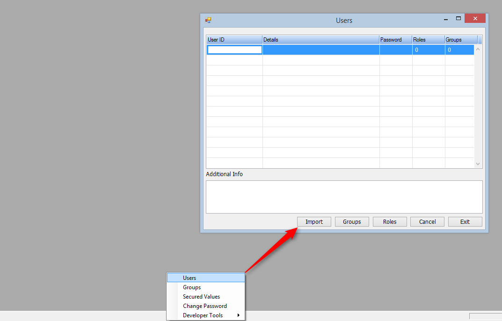

In order to import the security file of Magic (usr_std) into the migrated .NET application you first need to export it from uniPaaS/XPA using a utility
provided by Magic Software called MgUsrDmp.exe which is located in the Magic engine folder.
This utility exports all the users (without passwords) and rights to an XML file.
MgUsrDmp.exe /p=supervisorPassword /n=inputFile /o=outputFile
In the .NET application open the Users screen (Options->Users*), click the Import button and select the XML that was created.
Notice that .NET imports the users and rights into a file called "security" which is located in the bin folder.

For future migrations, upload the .NET security file to the AutomaticMigration folder in the FTP.